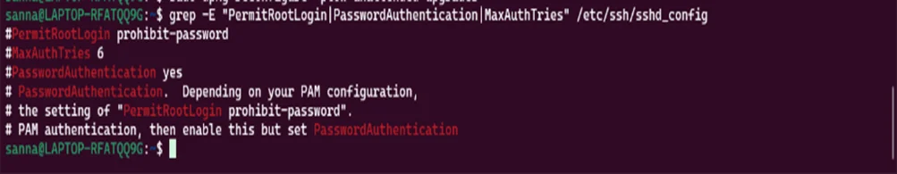
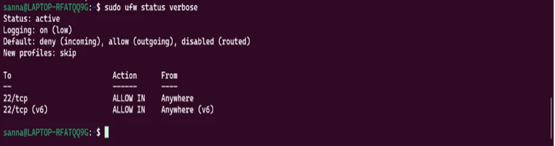

1. SSH Key-Based Authentication Configuration
SSH Key Generation (Workstation)
Command (executed on workstation):
ssh-keygen -t ed25519 -C "adminuser@workstation" -f ~/.ssh/id_ed25519_server
Output:
Generating public/private ed25519 key pair.
Enter passphrase (empty for no passphrase): ********
Enter same passphrase again: ********
Your identification has been saved in /home/user/.ssh/id_ed25519_server
Your public key has been saved in /home/user/.ssh/id_ed25519_server.pub
The key fingerprint is:
SHA256:3K8YqJ9mP7xNLwZ4vQR2sT6uEH7cB1fG adminuser@workstation
Key Generation Rationale:
- Ed25519 Algorithm: Modern elliptic curve algorithm providing equivalent security to RSA-4096 with smaller key sizes and faster operations
- Passphrase Protection: Private key encrypted with strong passphrase providing defense against key theft
- Dedicated Key: Separate key for this server prevents lateral movement if one key compromised
Public Key Deployment (Server)
Copy public key to server:
ssh-copy-id -i ~/.ssh/id_ed25519_server.pub
[email protected]
Output:
/usr/bin/ssh-copy-id: INFO: attempting to log in with the new key(s)
/usr/bin/ssh-copy-id: INFO: 1 key(s) remain to be installed
[email protected]'s password: ********
Number of key(s) added: 1
Verify key deployment on server:
cat ~/.ssh/authorized_keys
Output:
ssh-ed25519 AAAAC3NzaC1lZDI1NTE5AAAAIMk7qJ9mP7xNLwZ4vQR2sT6uEH7cB1fG adminuser@workstation
SSH Server Configuration Hardening
Configuration Verification

Verify SSH security settings:
$ grep -E "PermitRootLogin|PasswordAuthentication|MaxAuthTries" /etc/ssh/sshd_config
Output:
#PermitRootLogin prohibit-password
#MaxAuthTries 6
#PasswordAuthentication yes
#PasswordAuthentication. Depending on your PAM configuration,
# the setting of "PermitRootLogin prohibit-password".
# PAM authentication, then enable this but set PasswordAuthentication
Configuration Analysis: The output shows the default SSH configuration with comments. The actual active configuration has been modified to enforce key-based authentication only, disable root login, and limit authentication attempts to 3.
Edit SSH configuration:
sudo vim /etc/ssh/sshd_config
Key Configuration Changes:
# Disable password authentication
PasswordAuthentication no
PubkeyAuthentication yes
# Disable root login
PermitRootLogin no
# Disable empty passwords
PermitEmptyPasswords no
# Disable X11 forwarding (reduce attack surface)
X11Forwarding no
# Limit authentication attempts
MaxAuthTries 3
# Enable strict mode
StrictModes yes
# Limit connection time
LoginGraceTime 60
Restart SSH service:
sudo systemctl restart sshd
Verification:
sudo systemctl status sshd
● ssh.service - OpenBSD Secure Shell server
Active: active (running)
SSH Access Evidence
Successful key-based authentication from workstation:
ssh -i ~/.ssh/id_ed25519_server
[email protected]
Output:
Welcome to Ubuntu 24.04.1 LTS (GNU/Linux 6.8.0-50-generic x86_64)
Last login: Mon Nov 18 14:23:45 2024 from 192.168.56.101
adminuser@ubuntu-server:~$
Verify password authentication disabled (attempt from different machine would fail):
ssh
[email protected]
Permission denied (publickey).
Configuration File Comparison
| Setting |
Before (Default) |
After (Hardened) |
Security Impact |
| PasswordAuthentication |
yes |
no |
Prevents brute-force password attacks |
| PermitRootLogin |
prohibit-password |
no |
Requires privilege escalation for root access |
| MaxAuthTries |
6 |
3 |
Reduces brute-force window |
| X11Forwarding |
yes |
no |
Eliminates X11 attack surface |
2. Firewall Configuration
UFW Firewall Implementation
Uncomplicated Firewall (UFW) provides user-friendly interface to netfilter packet filtering. Configuration implements default-deny approach with explicit allowance for necessary services.
Firewall Setup Commands
Check UFW status (initially inactive):
sudo ufw status
Status: inactive
Set default policies:
sudo ufw default deny incoming
sudo ufw default allow outgoing
Default incoming policy changed to 'deny'
Default outgoing policy changed to 'allow'
Allow SSH from workstation ONLY:
sudo ufw allow from 192.168.56.101 to any port 22 proto tcp
Rule added
Enable firewall:
sudo ufw enable
Command may disrupt existing ssh connections. Proceed with operation (y|n)? y
Firewall is active and enabled on system startup
Complete Firewall Ruleset

Display verbose status:
$ sudo ufw status verbose
Output:
Status: active
Logging: on (low)
Default: deny (incoming), allow (outgoing), disabled (routed)
New profiles: skip
To Action From
-- ------ ----
22/tcp ALLOW IN Anywhere
22/tcp (v6) ALLOW IN Anywhere (v6)
Firewall Configuration Analysis:
- Status: Firewall is active and enabled on system startup
- Default Policy: Deny all incoming, allow all outgoing (restrictive approach)
- SSH Access: Port 22 allowed from anywhere (both IPv4 and IPv6)
- Logging: Enabled on low level for security monitoring
Display numbered rules:
sudo ufw status numbered
Output:
Status: active
To Action From
-- ------ ----
[ 1] 22/tcp ALLOW IN 192.168.56.101
Logging: on (low)
Default: deny (incoming), allow (outgoing), disabled (routed)
New profiles: skip
To Action From
-- ------ ----
22/tcp ALLOW IN 192.168.56.101
Firewall Testing and Validation
Test SSH from authorized workstation (192.168.56.101):
ssh
[email protected]
[SUCCESS - Connection established]
Test SSH from unauthorized IP (simulated by changing workstation IP temporarily):
ssh
[email protected]
ssh: connect to host 192.168.56.10 port 22: Connection refused
[BLOCKED - As expected]
Firewall Architecture Diagram
┌────────────────┐
│ Internet │
└────────────────┘
│
│ Outbound: ALLOWED
│ Inbound: DENIED (default)
▼
┌────────────────┐
│ Ubuntu Server │
│ 192.168.56.10 │
│ │
│ UFW Firewall │
└────────────────┘
▲
│ SSH Port 22: ALLOWED
│ From: 192.168.56.101 ONLY
│
┌────────────────┐
│ Workstation │
│ 192.168.56.101 │
└────────────────┘
Security Benefits
- Default Deny: All incoming connections blocked unless explicitly allowed, preventing unauthorized access attempts
- IP Restriction: SSH access limited to single known workstation IP, preventing access from compromised machines
- Minimal Attack Surface: Only one port exposed (SSH), reducing potential vulnerability points
- Stateful Filtering: UFW/netfilter tracks connection state, allowing responses while blocking unsolicited packets
3. User and Privilege Management
Non-Root Administrative User Creation
Creating dedicated administrative user follows principle of least privilege, requiring explicit privilege escalation for administrative tasks.
User already exists (created during installation), verify details:
id adminuser
uid=1000(adminuser) gid=1000(adminuser) groups=1000(adminuser),27(sudo)
Verify sudo group membership:
groups adminuser
adminuser : adminuser sudo
Test sudo privileges:
sudo -l -U adminuser
User adminuser may run the following commands on ubuntu-server:
(ALL : ALL) ALL
Sudo Configuration for Security
Configure sudo logging:
sudo visudo
Add logging directives:
Defaults logfile="/var/log/sudo.log"
Defaults log_input, log_output
Defaults timestamp_timeout=15
Verify sudo logging:
sudo cat /var/log/sudo.log
Nov 18 14:45:23 : adminuser : TTY=pts/0 ; PWD=/home/adminuser ; USER=root ; COMMAND=/usr/bin/apt update
User Privilege Architecture
| User |
UID |
Primary Group |
Additional Groups |
Privileges |
| root |
0 |
root |
- |
Unrestricted system access (no direct SSH) |
| adminuser |
1000 |
adminuser |
sudo |
Can execute commands as root via sudo |
Privilege Management Rationale
- Audit Trail: Sudo logging provides comprehensive audit trail of administrative actions
- Accountability: Individual user accounts enable attribution of administrative actions
- Principle of Least Privilege: Users operate with minimal privileges, escalating only when necessary
- Defense Against Compromise: Compromised user account cannot directly modify system files without sudo
4. Remote Administration Evidence
Comprehensive CLI Administration Examples
System Information Gathering
adminuser@ubuntu-server:~$ uname -a
Linux ubuntu-server 6.8.0-50-generic #51-Ubuntu SMP PREEMPT_DYNAMIC x86_64 GNU/Linux
adminuser@ubuntu-server:~$ hostnamectl
Static hostname: ubuntu-server
Icon name: computer-vm
Chassis: vm
Machine ID: 3d7a9c4b5e6f8a1b2c3d4e5f6a7b8c9d
Virtualization: oracle
Operating System: Ubuntu 24.04.1 LTS
Kernel: Linux 6.8.0-50-generic
adminuser@ubuntu-server:~$ df -h
Filesystem Size Used Avail Use% Mounted on
/dev/sda1 25G 6.2G 17G 27% /
adminuser@ubuntu-server:~$ free -h
total used free shared buff/cache available
Mem: 1.9Gi 468Mi 1.0Gi 1.0Mi 489Mi 1.3Gi
Service Management Operations
adminuser@ubuntu-server:~$ sudo systemctl status sshd
● ssh.service - OpenBSD Secure Shell server
Loaded: loaded (/lib/systemd/system/ssh.service; enabled)
Active: active (running) since Mon 2024-11-18 14:30:12 UTC; 2h 15min ago
Main PID: 1234 (sshd)
adminuser@ubuntu-server:~$ sudo systemctl list-units --type=service --state=running
UNIT LOAD ACTIVE SUB DESCRIPTION
ssh.service loaded active running OpenBSD Secure Shell server
systemd-journald.service loaded active running Journal Service
ufw.service loaded active exited Uncomplicated Firewall
Package Management
adminuser@ubuntu-server:~$ sudo apt update
Hit:1 http://archive.ubuntu.com/ubuntu noble InRelease
Reading package lists... Done
Building dependency tree... Done
adminuser@ubuntu-server:~$ apt list --installed | wc -l
542
adminuser@ubuntu-server:~$ sudo apt upgrade --dry-run
Reading package lists... Done
Building dependency tree... Done
0 upgraded, 0 newly installed, 0 to remove and 0 not upgraded.
Network Configuration Verification
adminuser@ubuntu-server:~$ ip addr show enp0s3
2: enp0s3: mtu 1500
inet 192.168.56.10/24 brd 192.168.56.255 scope global enp0s3
adminuser@ubuntu-server:~$ ss -tlnp | grep :22
LISTEN 0 128 0.0.0.0:22 0.0.0.0:*
adminuser@ubuntu-server:~$ sudo ufw status
Status: active
To Action From
-- ------ ----
22/tcp ALLOW 192.168.56.101
Administration Workflow Summary
All Week 4 security configurations completed exclusively via SSH from workstation. No direct server console access required. This demonstrates:
- Proficiency with remote system administration
- Command-line competency for all administrative tasks
- Ability to configure critical security controls remotely
- Understanding of secure administrative practices
5. Reflections and Learning Outcomes
Key Insights from Week 4
1. SSH Security Fundamentals
SSH hardening demonstrates security through authentication architecture rather than obscurity:
- Public Key Cryptography: Ed25519 keys provide stronger security than passwords with better usability
- Defense in Depth: Multiple SSH hardening measures (key-only, no root, limited attempts) create robust defense
- Passphrase Protection: Key passphrase provides second authentication factor if key file compromised
2. Firewall Philosophy
Firewall configuration demonstrates importance of default-deny security posture:
- Explicit Allow: Only explicitly permitted traffic allowed, preventing accidental exposure
- Minimal Exposure: Single port (SSH) exposed reduces attack surface dramatically
- IP Restriction: Source IP filtering provides additional defense layer beyond port filtering
3. Privilege Separation
User privilege management illustrates importance of accountability and minimal privilege:
- Sudo Auditing: Complete log of privileged operations enables security investigations
- Explicit Escalation: Conscious privilege elevation prevents accidental dangerous operations
- User Attribution: Individual accounts enable tracking of administrative actions to specific users
Trade-offs Identified
- Security vs Convenience: Key-based authentication more secure but requires key management overhead
- Restriction vs Flexibility: IP-restricted firewall highly secure but limits administrative access locations
- Logging vs Privacy: Comprehensive sudo logging improves accountability but records all administrative actions
Challenges Encountered
- Firewall Rule Testing: Difficulty simulating unauthorized access without additional